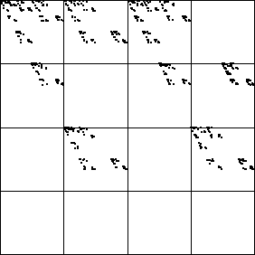

| The left
picture is the IFS driven by the s = 3.723 logistic map; the
right picture is generated by a random IFS with the s = 3.732 logistic
map forbidden pairs imposed. |
| Every empty subsquare of the right picture
has address contaning one of the pairs 11, 12, 13, 21, 22, 23, 32, or 44. |
| Consequently, the left picture has some empty subsquares that are not
consequences of the empty pairs. In this sense, the left picture is more
complex than the right. |
 |
 |
 |
| IFS driven by the s = 3.732 logistic map |
|
Random IFS with the s = 3.732 forbidden pairs imposed |
|
| In examples such as the s = 4.0 logistic map,
the driven IFS is completely determined by the forbidden pairs. |
| This is because
partitioning the range [0, 1] into four equal intervals is a
Markov partition. |